Every December, the harbour bell opens the lantern procession with the same three strokes. This year the third stroke never comes. When Polly Roger hears the tune from the wrong shore the following evening, she thinks somebody has moved the bell. Her best clue points to a friend.
45 printed pages · 12.8 MB · A4 or US Letter. Download PDF · Open PDF to printOpens in a new tab. Use the PDF viewer's Print control.
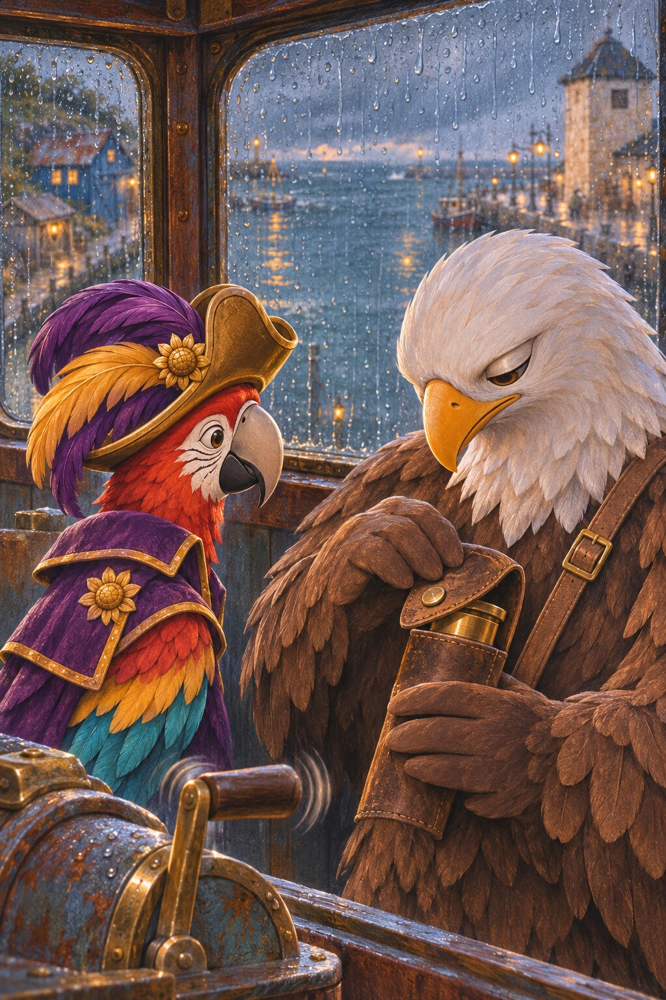
Page 1 of 44
The missing stroke
Polly Roger could hear the ferry before she could see its lights. The engine slowed outside the harbour wall and the loose handle on the cabin door began to chatter. She made the same sound with her beak. A passenger reached behind her to steady the handle, then gave her a look.
“I might need that noise,” Polly said.
Captain Beakon strapped his brass telescope into its case. “You collect noises the way other people collect shells.”
“Shells take up room,” said Polly. Then the ferry turned and the harbour came into view.
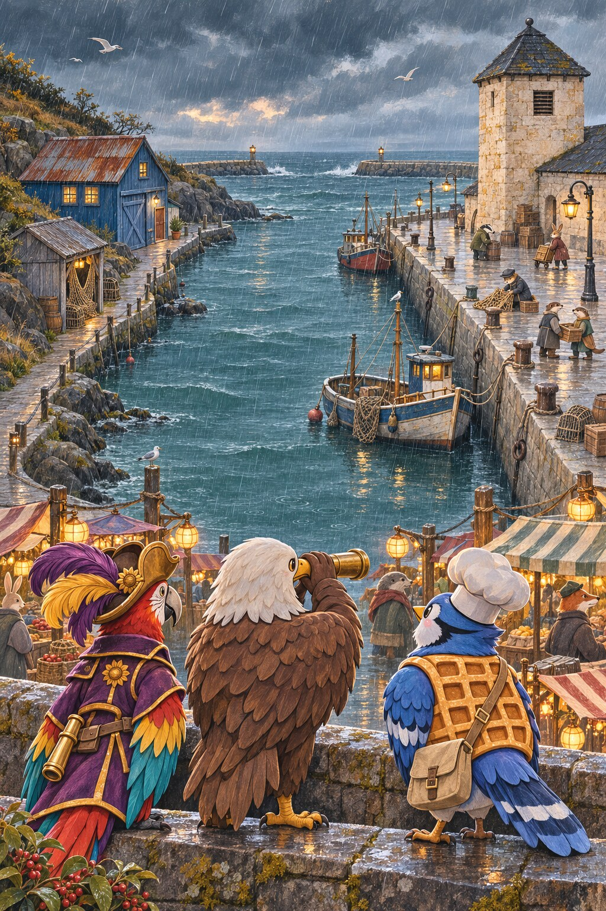
Page 2 of 44
The town curved round the head of the bay. On the west side, a wide stone quay ran out below the bell tower. The market stood at the head, where two streets met. From there a narrow path followed the east shore past the old net shed and ended at a blue boathouse.
Belgian-Waffle was waiting at the landing with his messenger bag strapped over his waffle vest. He took them to the market wall, where he said the harbour bell sounded best.
Polly could see both shores from there if she stood on tiptoe.
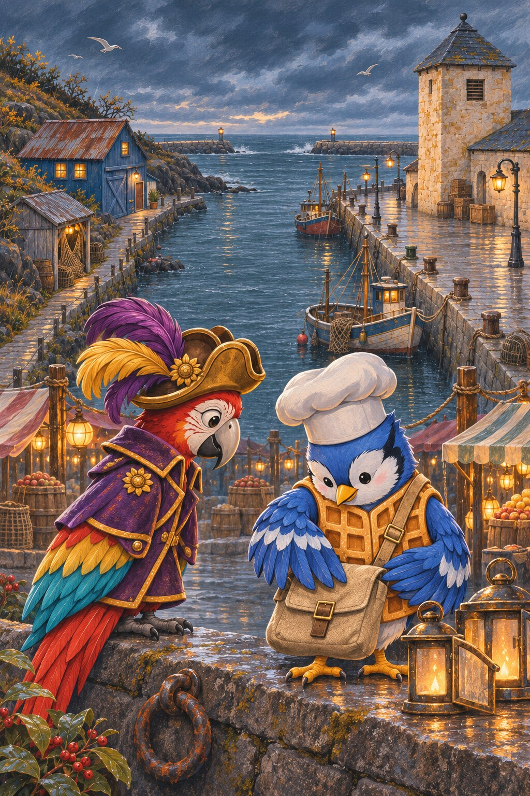
Page 3 of 44
They'd come to join the Christmas lantern procession. Last December, Beakon had promised to bring Polly back for the bell. Tonight was the rehearsal. At the real procession in two evenings, the tower would ring, the first lantern would light at the market, and everyone would walk east to the blue boathouse.
“People can hear it behind closed windows,” said Belgian. “No one has to stand in the cold just to know when we're leaving.”
He tapped the tune on his bag. Two close taps. A space long enough to take a breath. One on its own.
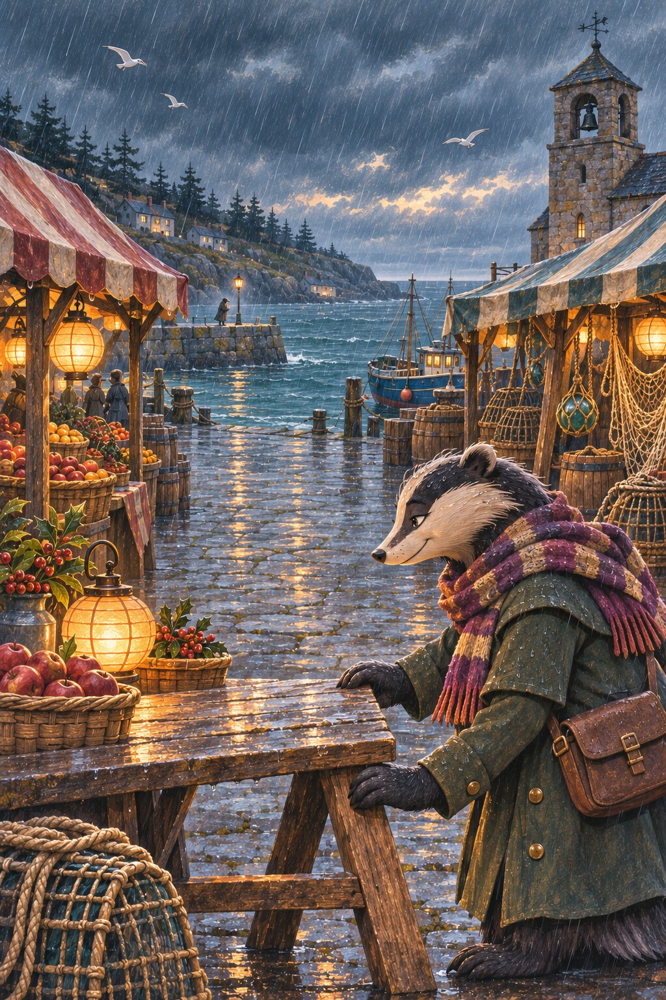
Page 4 of 44
Marnie, the badger who ran the market, handed Polly a bundle of paper lanterns to unfold. Marnie could lift a long trestle table by herself, but asked for help with anything that creased.
“Leave the gaps between the stalls clear,” she told Belgian. “When the bell goes, the whole quay comes through at once.”
On the west side, a tall brown rook crossed the quay in a grey coat. Belgian pointed him out. Rowe looked after the bell and had rung it every December for twenty-three years.
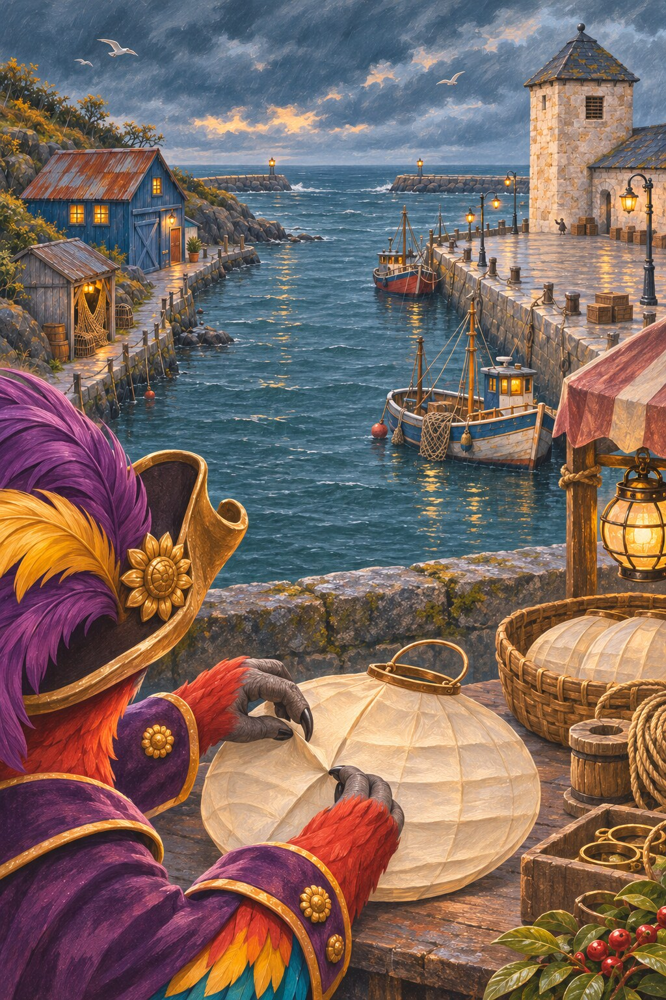
Page 5 of 44
Every clock on the market wall said a slightly different time. Marnie watched Rowe instead. He raised one wing beside the tower door and went inside. From across the bay, the laundrette windows shone behind him.
The first two strokes came so close that the low note of the first was still humming under the second. Polly knew exactly how long to wait. She held her breath and squeezed a fold flat in the paper lantern.
The third stroke didn't come.
She looked up. Rowe had lowered his wing. She could no longer see the tower door.
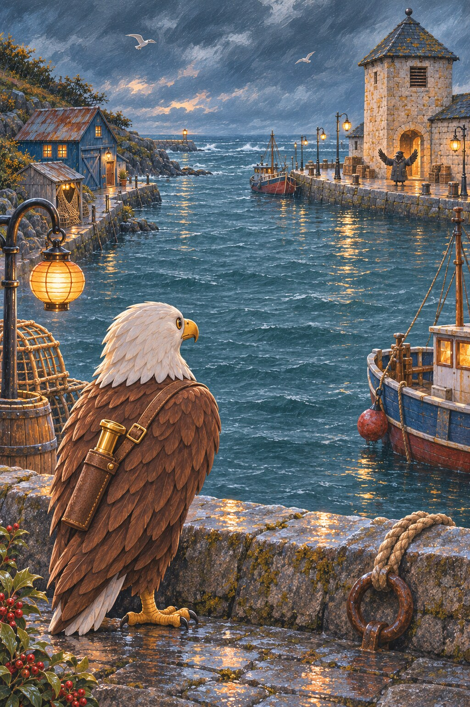
Page 6 of 44
Marnie called towards the west quay. A figure in grey came out of the tower and lifted both wings: stop.
“Keep the paper dry,” Marnie said. Someone had started to light a practice lantern and she went to speak to them.
For a few seconds Polly thought the bell itself had fallen. Then she realised how many sounds that would have made.
Beakon didn't move from the wall. “What did you hear?”
“Two strokes,” said Polly. “The second one went flat sooner than I expected.”
“Tell me that again later,” he said.
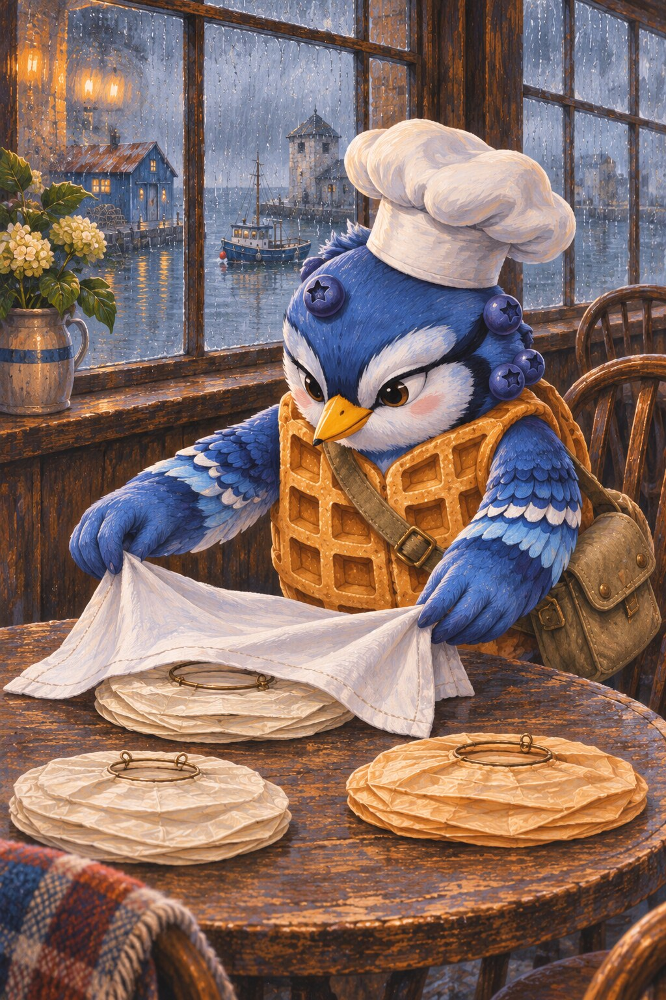
Page 7 of 44
In the café, Belgian laid a dry napkin over each of their damp lanterns. He liked putting things in order when he couldn't fix them. Marnie came in and told the room that Rowe had set the rope aside until the bell could be checked. The procession was still on.
A few people began telling stories about the time snow shut the market or the time the power went out. In all of their stories, somebody rang the bell anyway.
Belgian stacked the napkins too neatly. Polly didn't ask what he was thinking.
Page 8 of 44
The other shore
Next afternoon, Polly helped Beakon carry a box of lantern hooks to the east path. The boards of the old net shed had been bleached grey. Beyond it, the blue boathouse sat with its long side to the water. No boat had been kept there since the slipway wore out. Now somebody had planted winter herbs in pots along the dry side.
“Ada Reed looks after it,” said Belgian. “She lets people mend nets there if it rains.”
One of the pots was wedging the side door open. Polly smelled damp rope and rosemary.
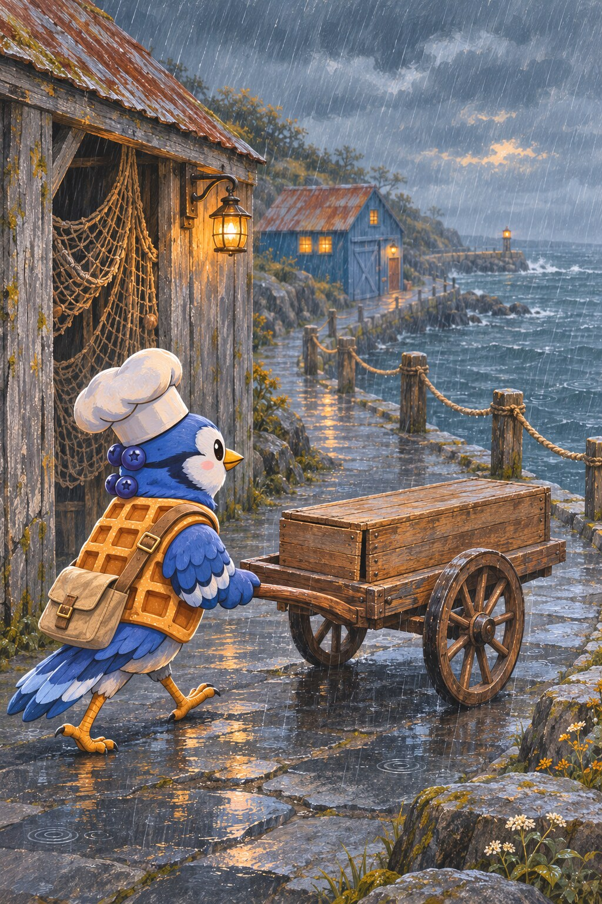
Page 9 of 44
Belgian made two trips to the market while they fastened the hooks. On his third, he brought a long wooden box on a handcart. One board at the end rattled with every bump.
Polly offered to take a handle. Belgian shook his head.
“Easy from here. I've got to get it to the bend before dark.”
He took the east path past the net shed. Polly turned back to hold the ladder from ground level while Beakon secured the last lantern hook. When she looked again, Belgian and the box were out of sight.
Page 10 of 44
Polly had hardly got her claws warm when Marnie asked whether she could hear the bell from anywhere but the market wall. Polly began listing places. Then she saw what Marnie actually wanted.
“I can tell people if I hear it,” Polly said.
“You could wait at the wall,” Marnie said. “Some of the stallholders think we're calling the whole thing off. I could use somebody who listens.”
Polly stood a little straighter. She was used to being asked to repeat what she'd heard. This was the first time anybody had asked her to be responsible for it.
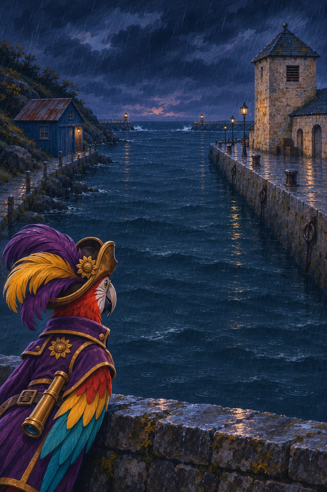
Page 11 of 44
Near dusk, the market fell quiet for the time it took the ferry to pass the harbour wall. Polly leaned over the rail.
Two strokes. A gap. Then one on its own.
She knew the tune before she had time to decide where it came from. She turned towards the tower. The low window was dark. A moment later she caught a little knock from the east, where the blue boathouse should be.
“It's back,” said a man beside her.
Polly stared out at the bay. “I don't think it's back in the same place.”
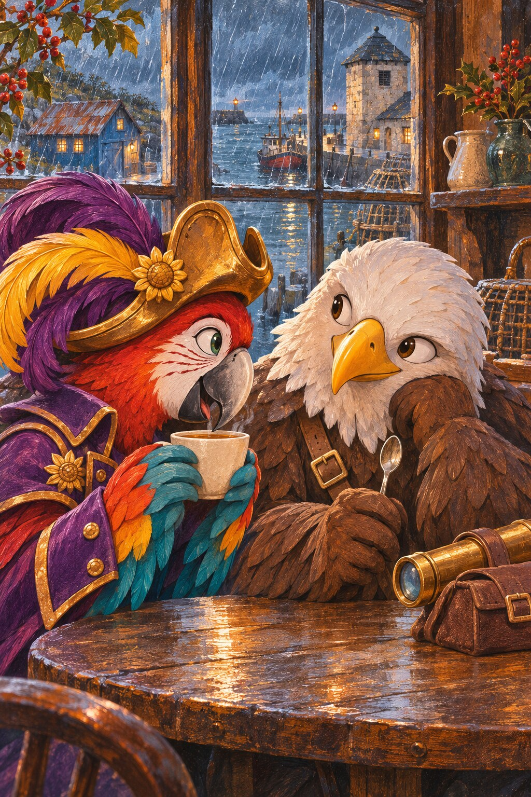
Page 12 of 44
In the café, Polly tried the two sounds for Beakon. For the first night, she lowered her note and let it out slowly. For the second night, she cut the note off sooner and added the little knock with her beak against the side of her cup.
“The tune is the same,” she said.
“And the sound?”
“The notes were higher. Shorter, too. I didn't notice until I tried it.”
Beakon stirred his tea. “Someone rehearsing on another bell would do it.”
Polly had already got a picture of the big bell on a cart. It was hard to put down.
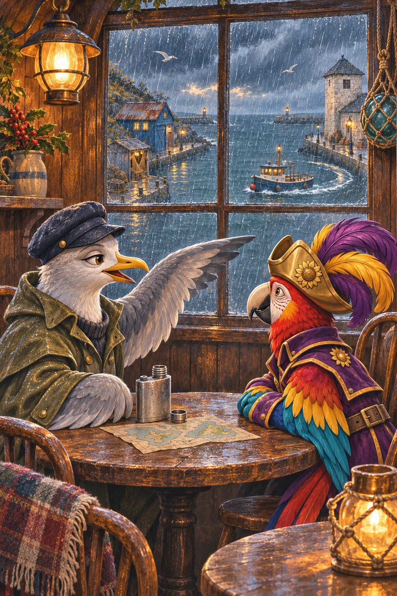
Page 13 of 44
The ferry pilot came in carrying an empty flask. She'd been out on the water when the bell rang and was sure it had come from the west.
“I was facing the west,” she said.
“Were you outside?” asked Polly.
“My window was shut. I opened it after the second stroke.”
She traced the shore in the air with a finger. The ferry had been turning. By the last stroke, she had been facing the market again.
“I still think west,” she said. “But I couldn't swear to it.”
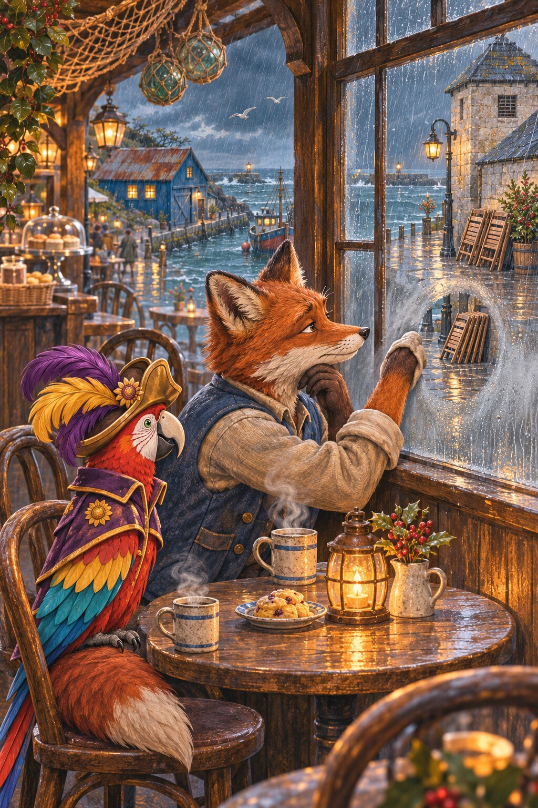
Page 14 of 44
At the far end of the café, a fox called Len told someone he'd seen a crate on the east path. He kept repeating how wide it was. Polly sat beside him and asked if the crate had been on a handcart.
“The cart rattled,” said Len. “I heard it after the bell.”
“I saw it in the afternoon.”
Len rubbed the window with his sleeve. “Could have been. I've been moving wet chairs off this path all day. After a while everything with wheels sounds like the same chair.”
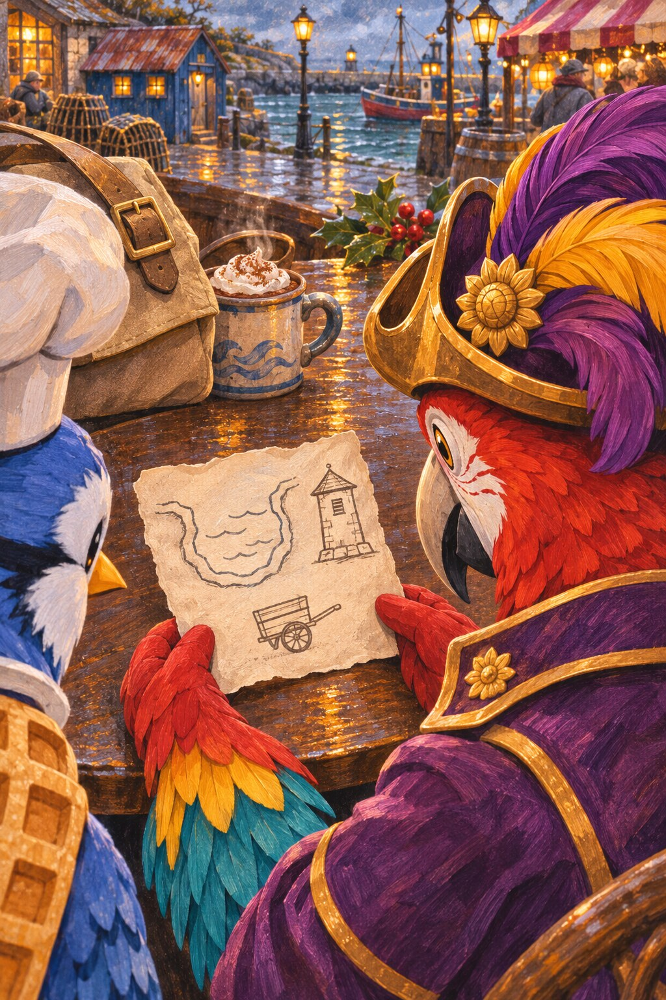
Page 15 of 44
Polly drew the three things she knew on the back of a market leaflet. The tower on the west. The tune on the east. The cart that had gone round the head of the bay.
She put a question mark on the cart. Then she made the question mark smaller, as if that might make the rest of the drawing more useful.
Belgian saw it when he passed their table.
“Is that my cart?”
“It's a cart,” said Polly.
He waited. She folded the paper so the drawing was inside.
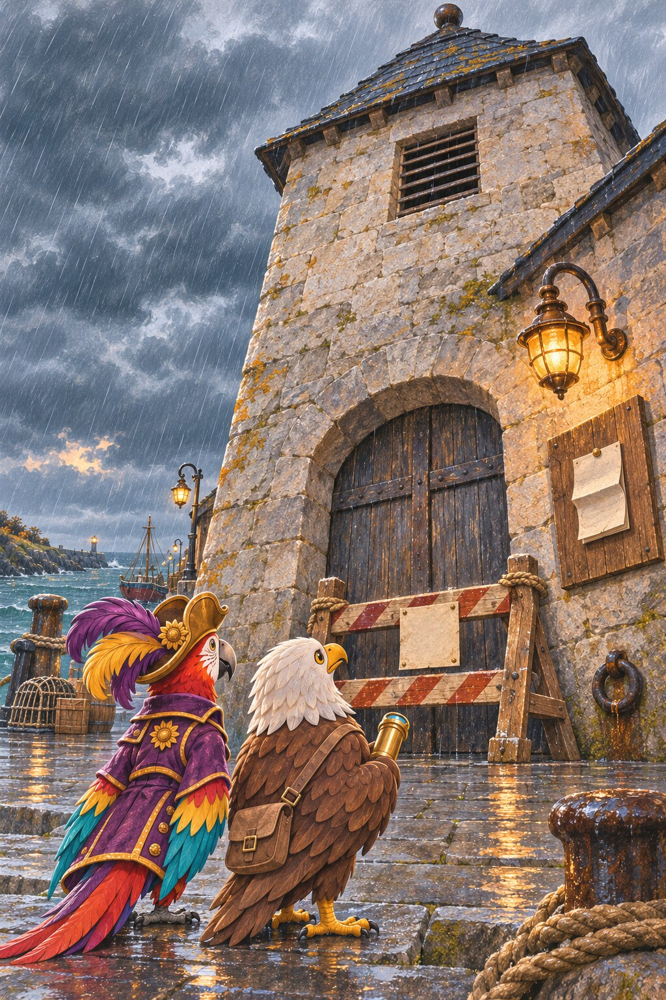
Page 16 of 44
What a cart can carry
By morning, somebody at the market was saying the bell had been moved without permission. Somebody else said it had been sold. Nobody could say who had first told them.
Polly went down to the tower with Beakon. A wooden board blocked the entrance, with a fresh notice to say the bell would stay silent while a bell specialist looked at it. Above them, the square louvred opening was too far away to tell what was behind it.
Beakon sat on the seawall. “We can wait for Rowe.”
Polly had hoped they could do something quicker.
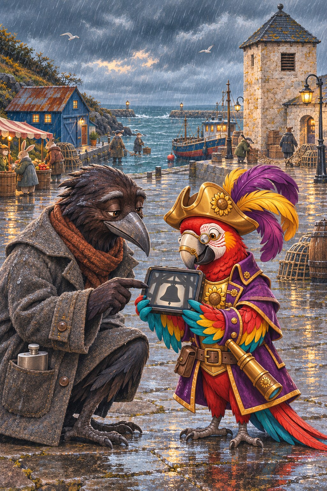
Page 17 of 44
Rowe was at the quay hatch signing out a set of life rings for the procession. He recognised Beakon and came over.
“You stopped after the second stroke,” Polly said.
“Yes.”
“Did the bell go somewhere?”
“It's hanging where it did yesterday,” he said. “And where it did the day before that.”
He didn't seem offended. He looked tired. When Polly asked if they could see, Rowe showed her a photograph he had taken that morning for the specialist. The bell hung in its frame, a sea-grey cone with a nicked rim.
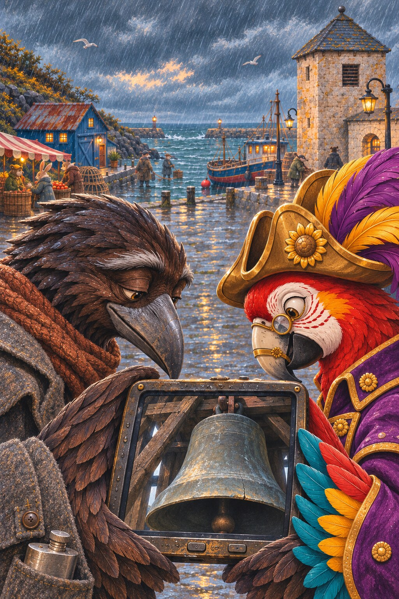
Page 18 of 44
Rowe enlarged the picture until a dark line showed near the rim. From the ground, Polly would have missed it.
“I heard a change on the second stroke,” he said. “I stopped. We'll leave the rope tied back until we know more.”
Beakon asked what it would take to move the bell.
“A crew, a lift and room on the west quay. You can't get it through the stair door on a handcart.” Rowe slid the screen shut. “Wish you could. The specialist wouldn't have to bring so much gear.”
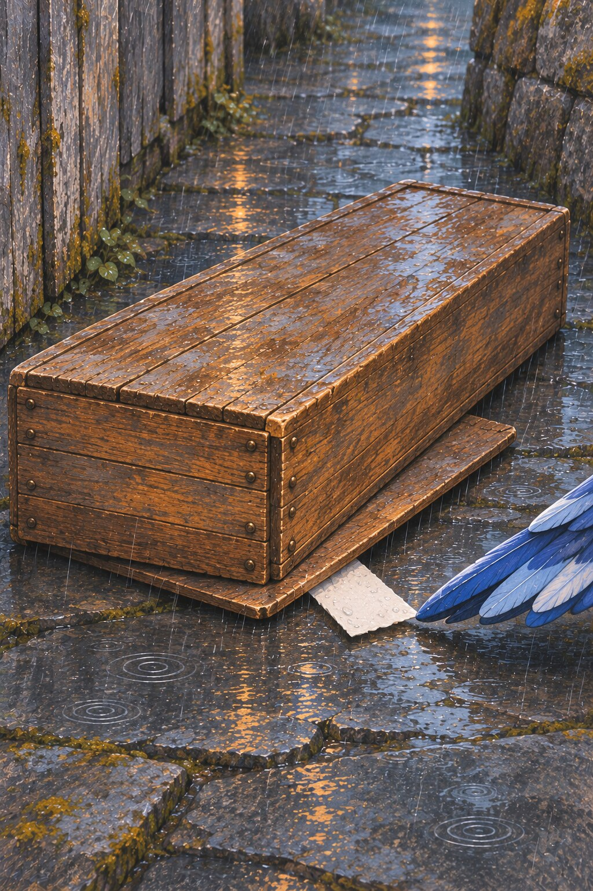
Page 19 of 44
On the way back, Belgian was stacking empty crates beside the lane. At his feet lay the same long box, upside down and empty. A delivery slip stuck up beneath its lid.
“You can look,” he said. “Don't get it wet. It's my copy.”
Polly read the familiar words at the top and the short description underneath. Wooden stand. East shore. Ada Reed.
“Did she say what it was for?”
“No. I carried a stand with two folding legs. It came out at the boathouse. Then I brought the box back.”
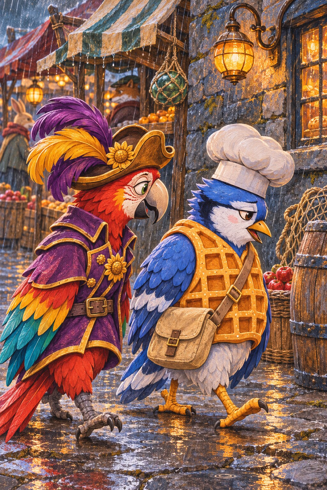
Page 20 of 44
As they walked, Polly tried to fit what Belgian had said to the tune she’d heard. A wooden stand might be part of another bell. It could also be a place to hang nets or dry lanterns.
“What did you think it was for?” she asked.
Belgian lifted his good wing. “I thought it was a stand.”
She took that for a joke until she saw his face. He'd been answering her honestly the whole time and was beginning to wonder what answer she wanted.
“It helps,” she said. “I should have said that first.”
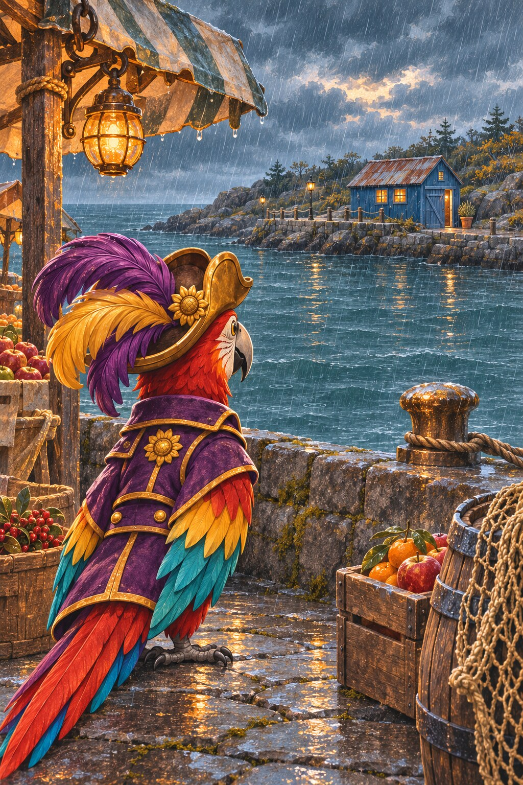
Page 21 of 44
The market wall was dry again. Polly stood on her usual stone and did the tune in her head.
If the first night had happened at the tower, its note had reached her over open water. On the second night, the last short note had arrived at the same time as a shutter or latch knocked on the east shore. She remembered the boathouse door being held open with a pot. She remembered the smell of rosemary.
She had a place, a sound and a delivery. What she needed was a way to see whether they belonged together.
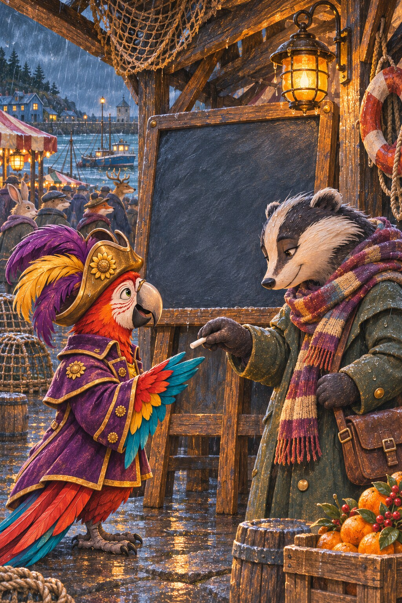
Page 22 of 44
Marnie found her at the wall and handed her a piece of chalk. On the board by the market gate was a question that someone had written in a hurry. Where will the bell ring?
“I was going to write that there might be a drum,” said Marnie. “But people see guesses and turn them into plans.”
“I heard it from the east,” said Polly.
“You heard a sound. If you write where, someone will ask who.”
Polly looked down at the chalk. She thought of Belgian saying he'd carried a stand.
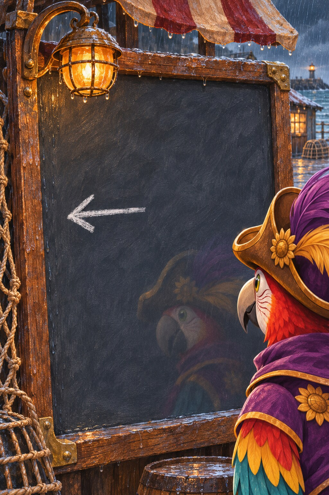
Page 23 of 44
Polly drew an arrow towards the east track. Ask Belgian where the bell went, she wrote underneath. If he'd carried something for a rehearsal, he must know the town would want to hear it again. She imagined him saying so at the market wall, where people knew to trust his directions.
Marnie had moved to help a stallholder with a table. There was time to rub the words out and write something smaller.
Someone behind Polly read the board aloud. Another voice said, “So that's what was in the box.”
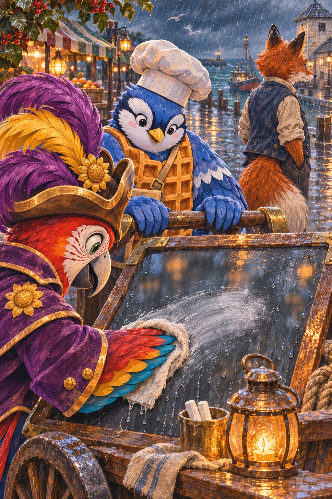
Page 24 of 44
Taking it down
Belgian was outside the market gate trying to get his handcart through a knot of people. Len stopped beside it.
“Where'd you take the bell?” he asked.
“What bell?”
Len pointed at the board. Belgian looked up just as Polly reached it. She wiped the writing away with her sleeve. Wet chalk made a broad white bruise on the slate.
“It never went anywhere,” she said.
Len took his hand off the cart. Someone at the back said that was easy to say now. Belgian wheeled the cart into the lane.
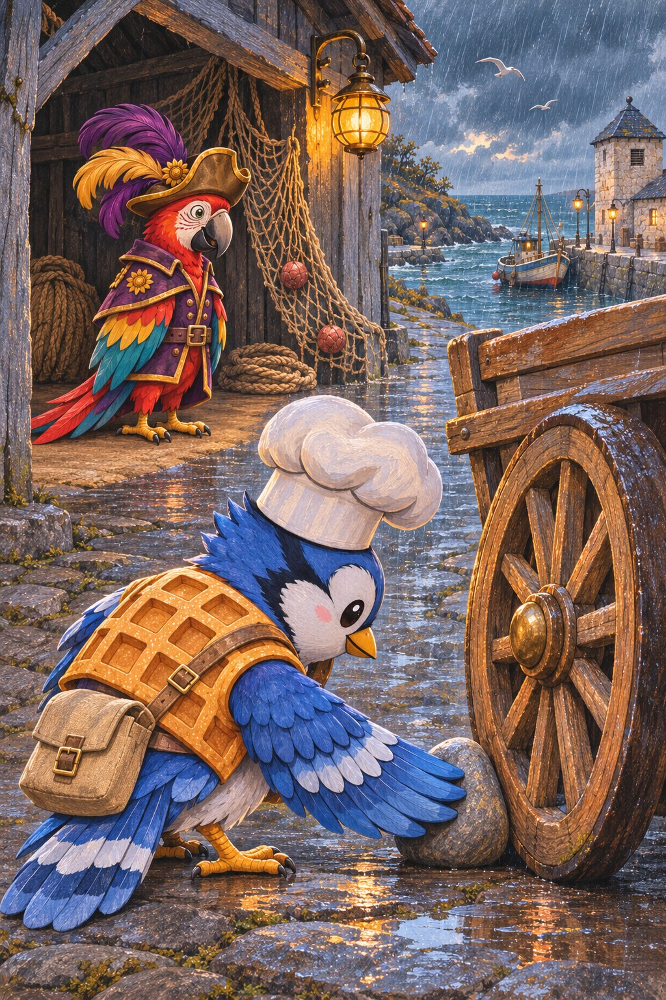
Page 25 of 44
Polly caught up at the net shed. “I was trying to tell people you knew what had happened.”
“Then why didn't you ask me if I knew?”
Polly could only think of things that would make it worse. She waited while Belgian pulled the cart under the eaves and wedged a stone against one wheel.
“Some people count on me to carry things without making it everybody else's business,” he said. “I told you what was on the slip because I thought it would help.”
“It did,” Polly said. He looked at her then.
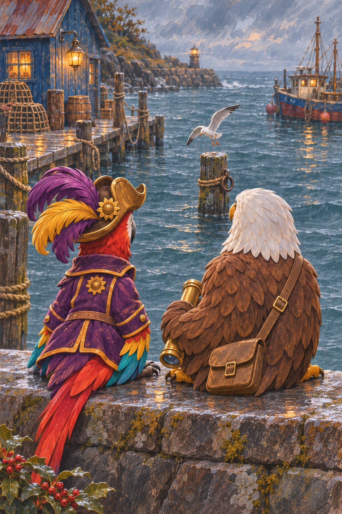
Page 26 of 44
Beakon was on the seawall, looking through his telescope at the gulls. He lowered it as Polly came to sit beside him.
“I knew the bell was still in the tower,” she said. “I thought if I wrote it that way, people would ask Belgian about the other one.”
“You wrote the riddle as though you already knew the answer.”
“Can you tell them what I meant?”
“I can go with you,” said Beakon.
They watched a gull try to land on a post, miss, and turn for another go.
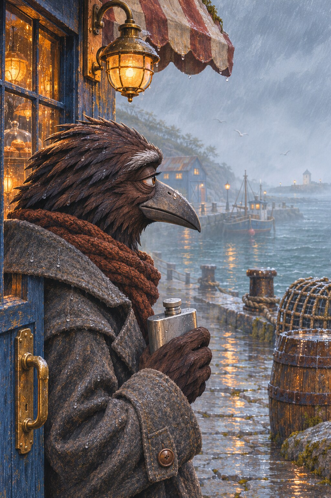
Page 27 of 44
Rowe was sitting outside the café with his flask, waiting for a call from the specialist. Polly asked whether she could say what he'd shown her in the photograph.
“You can say the bell is still in the tower,” he said. “And that it won't ring tonight.”
“Will people mind?”
“Some will. I mind.”
He took a swallow of tea. “I've had my hand on that rope every December for a very long time. Being the one who lets go is part of the job too.”
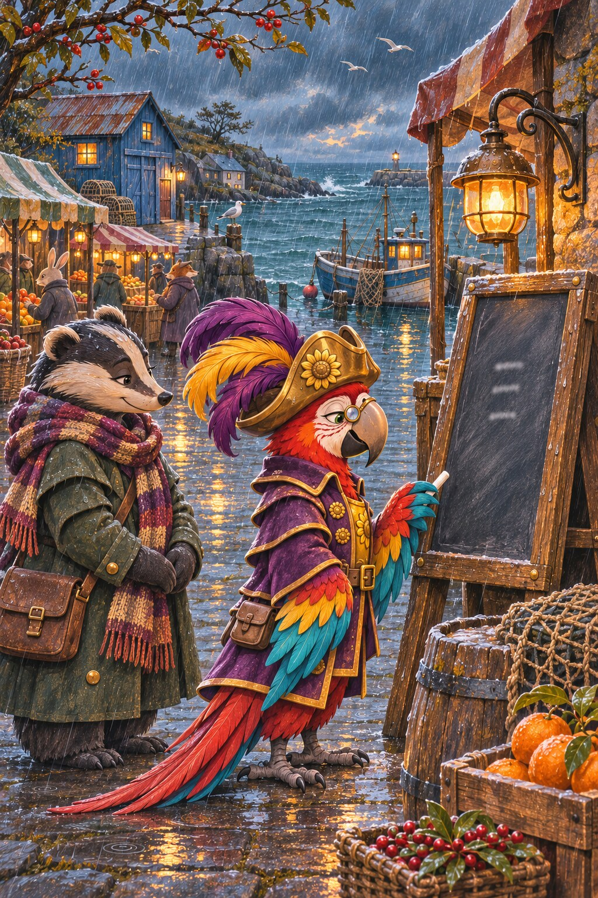
Page 28 of 44
At the market board, Marnie gave Polly a clean rag and stood next to her while she wiped off the last white streak. Len was helping stack chairs close enough to hear.
Polly wrote three short lines. The tower bell is still in place. It will stay quiet until it has been checked. Belgian delivered a stand.
“Put your name underneath,” Marnie said.
That was the part Polly had wanted yesterday. She hadn't expected it to feel quite so different when the words were true.
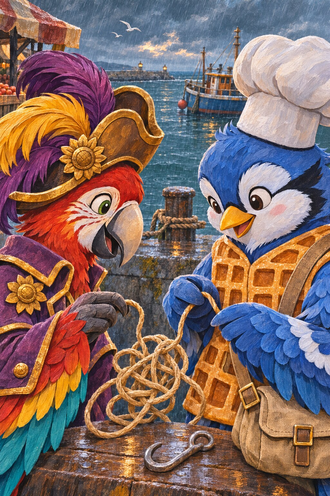
Page 29 of 44
Polly found Belgian untying a bundle of lantern hooks. She asked him to read the board if he wanted. Then she told him she'd been wrong to put his name on the first notice.
He took his time with a knot.
“All right,” he said. “But if you want to ask Ada about the stand, you ask her. I can show you the path.”
He undid the knot and shook out the cord, which was still tangled in the middle. He gave Polly one end to hold.
Page 30 of 44
They walked east with Beakon. From the narrow path, Polly could see the broad west quay and the level place where a crane might stand beside the tower. Nothing on this side was wide enough for that. A handcart could go east carrying a wooden stand. A great bell could stay exactly where it was.
At the net shed, a loose board knocked in the wind. Polly stopped.
It was the sort of sound she'd heard after the third stroke. The two sounds had overlapped. They didn't have to come from the same thing.
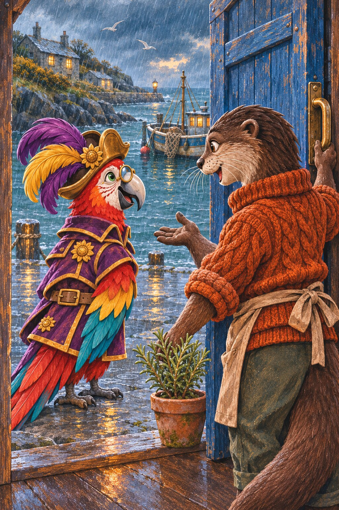
Page 31 of 44
The blue boathouse
At the boathouse the pot of rosemary sat a little way from the side door. One leaf had been trapped in the gap. Belgian stayed by the path while Polly knocked.
An otter in a rolled-up rust jumper opened the door. The wet weather had curled the fine fur round her ears.
“I'm Ada,” she said. “If you're here about the lantern brackets, they're ready.”
“I'm here because I heard the tune,” said Polly. “And because I said something at the market before I knew what it meant.”
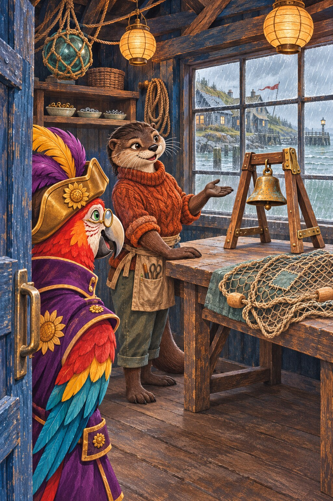
Page 32 of 44
Ada studied Polly for long enough that she heard the water hiss against the old slipway. Then Ada opened the door a little wider. A worktable, a coil of net and several shallow trays of screws filled the dry part of the room. A small brass bell hung from a folding wooden stand beside the far window.
It was about as wide as a dinner plate. For a moment Polly felt foolish for imagining the tower bell in a crate.
“Does it sound how I think?” she asked.
“That depends what you heard.”
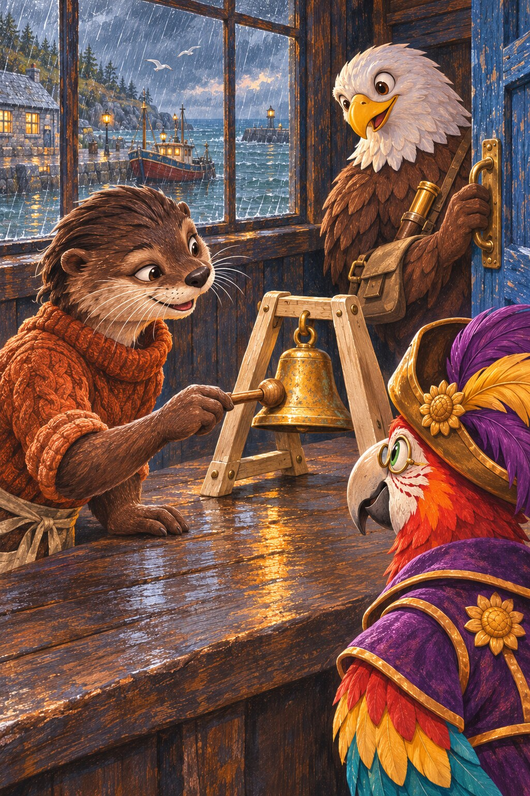
Page 33 of 44
Ada took a small handled striker from a felt pouch. She asked Beakon to hold the door during the demonstration.
Two bright strokes close together. A breath. One bright stroke on its own.
Polly knew the tune. She waited until the last note had faded, then made the short, high sound she'd kept in her head. In the doorway Belgian looked up.
“That's what we heard,” said Beakon.
“Almost,” said Polly. While Ada put the striker away, Beakon let the heavy door swing gently towards the catch.
Knock.
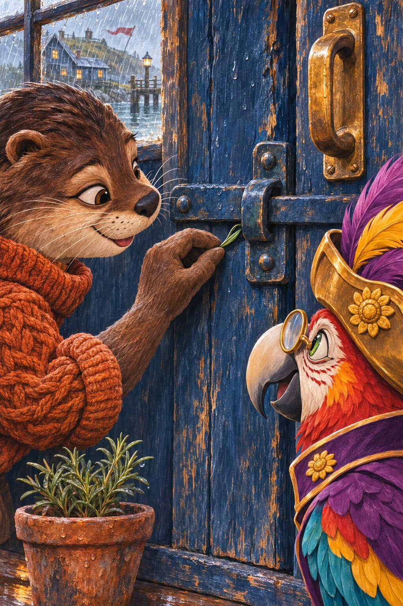
Page 34 of 44
“The pot slipped yesterday,” Ada said. She picked up the trapped leaf and brushed it off the sill. “The door swung in as I finished the tune.”
Polly made the knock once, softly. Then she told Ada about the dark tower, the pilot turning in her boat, and Len remembering the wheels later than he'd heard them. She could make a story with every bit now. She didn't need the cart to carry anything except what it had carried.
Belgian was looking at the bell. Ada asked if he'd like to see where the stand folded.
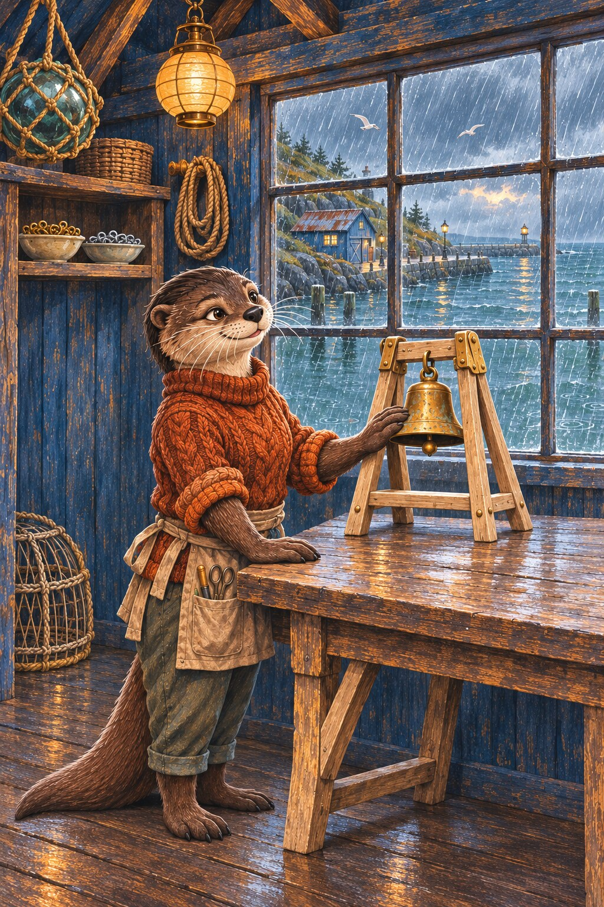
Page 35 of 44
Ada used to teach the tune to new lantern carriers. The big bell was hard to get permission to ring, so she bought a little practice bell and used it indoors. Her partner Kit used to listen from the other shore and make a signal with a handkerchief when she got the gap right.
“We stopped practising out here after Kit died,” she said. “This winter I thought I could bear to do it again.”
She reached over and put one paw against the little brass skirt. It was already still.
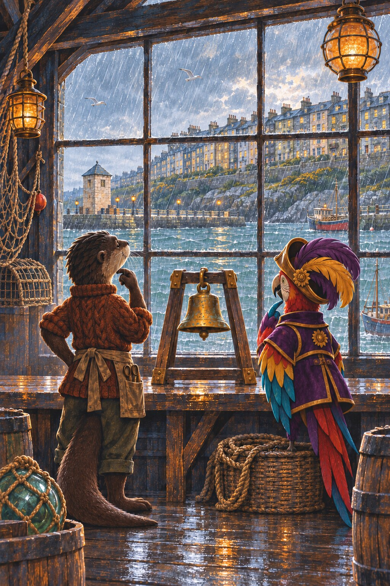
Page 36 of 44
“When Marnie said the big bell had gone quiet, I asked for the stand,” Ada said. “I thought I might have something to offer. Yesterday was a trial with the door open. I hadn't intended to announce anything.”
Polly thought of the chalk in her sleeve. A little brass bell could reach the market wall. There were flats up behind the tower, and houses beside the road. There would be people waiting for a note they could hear from their own tables.
“Would you ring it tonight if Marnie asked?” she said.
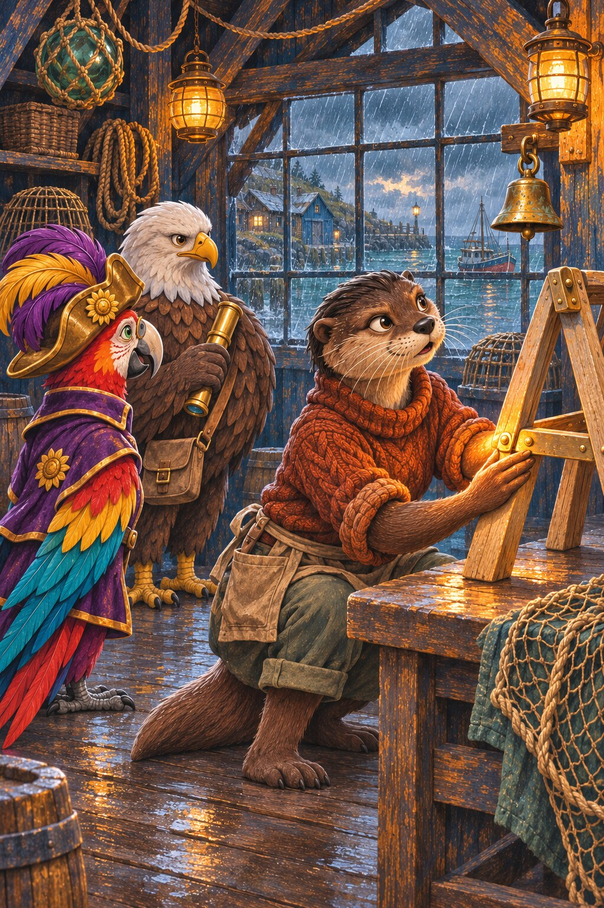
Page 37 of 44
Ada looked across at the square opening in the tower.
“Someone will say I want to take Rowe's place.”
“He could tell them himself,” said Beakon.
Polly didn't know if he would or if he should have to. She asked Ada what she'd want the notice to say. Ada hung the little bell on a wall hook while she tested a wooden joint of the stand.
“I'd want it to say practice bell,” she said. “And I'd want people at the far flats to know that it won't sound as loud.”
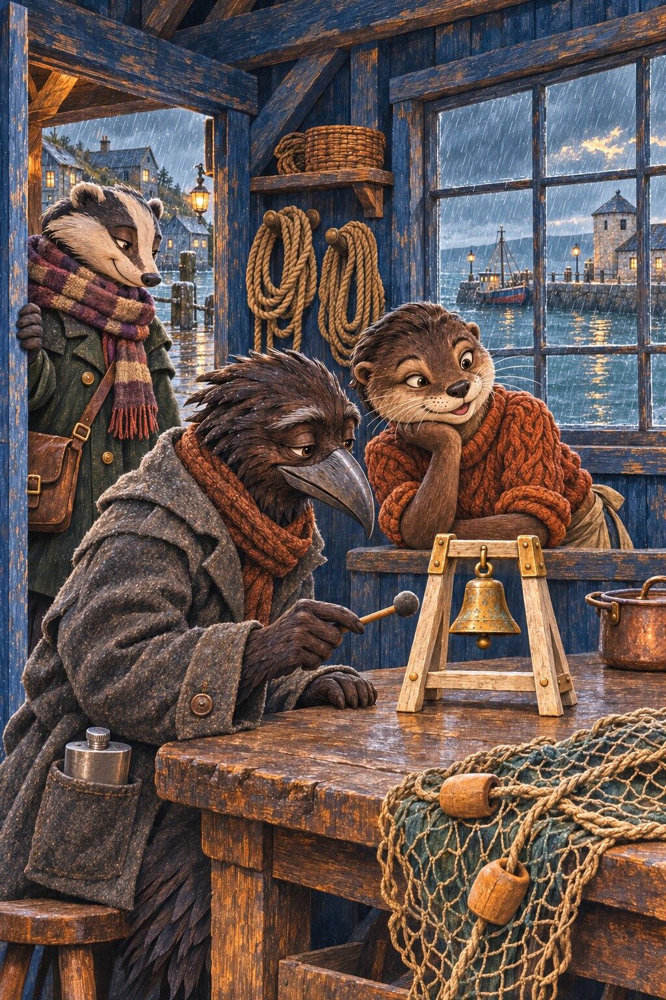
Page 38 of 44
Both shores
They brought Marnie and Rowe to the boathouse by the east path. Ada showed them the stand before she showed them the bell. Rowe asked if he could try one stroke, and she handed him the felt pouch.
The high note surprised him. He laughed once and waited for it to fade. Then he and Ada worked out who would ring, who would light the first lantern, and where the lantern carrier should stand.
Polly watched them move the stand back from the door. This time somebody put the pot in a place where it couldn't slip.
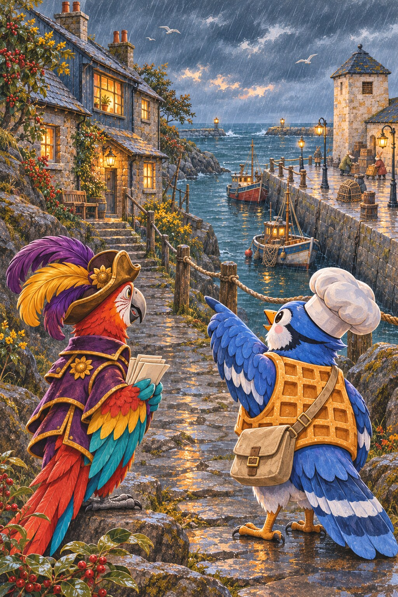
Page 39 of 44
Marnie had time to change the market notices before dusk. Rowe wrote his own line beneath hers about the inspection. Belgian walked copies down the west shore, all the way to the flats.
Polly went with him. One neighbour couldn't hear the high note from her sitting room. She could see the end of the quay, so they asked whether she'd like a lantern raised there in answer. She said yes, if it was above the rail and somebody could keep it still.
Belgian knew exactly which post she meant. At the market wall on the way back, he pointed across to it so Polly would know it too.
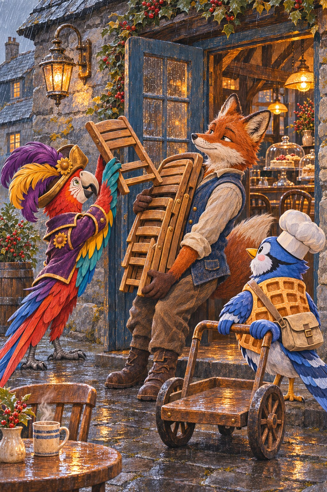
Page 40 of 44
On the way back, Len called to them from the café door. He was trying to pick up too many folded chairs at once.
“I thought it was your cart,” he said to Belgian.
“It rattles most days,” Belgian said. “You can help me quiet the loose board after Christmas.”
Polly took the chair at the top of Len's pile. He hadn't asked for help. She waited a moment before taking another, and he moved his hand so she could get a better grip.
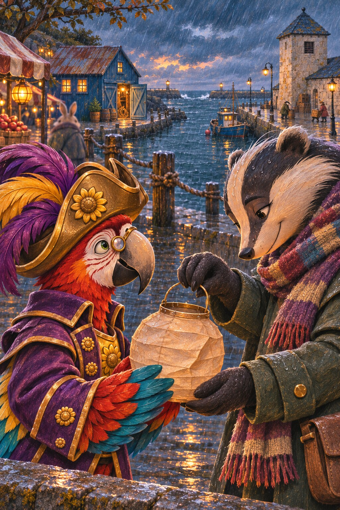
Page 41 of 44
The market stalls glowed as the sky darkened. For the first time that week the wind dropped. Some people walked west to watch the tower. Marnie asked them to turn round so they could also see the boathouse.
Polly carried the first paper lantern down to the market wall. She had folded it on the rehearsal night. A small crease still ran down one side. She smoothed it with her claw, then left it there.
Across the water, the old tower kept its dark square window. Ada opened the blue door.
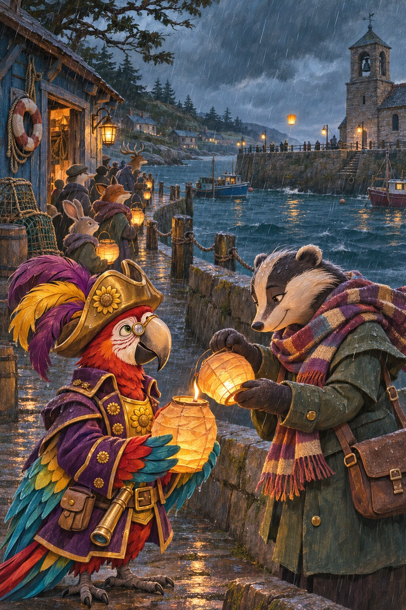
Page 42 of 44
Polly heard the first bright stroke and then the second. She knew how long the empty space ought to last. Once, she would have filled it by copying the sound herself. Now she waited.
The third stroke reached the wall. On the west quay, the answering lantern rose above the rail and held there, as steady as a window.
Marnie brought her flame to Polly's lantern. It lit along the crease first. The crowd behind her began walking east in a slow line.
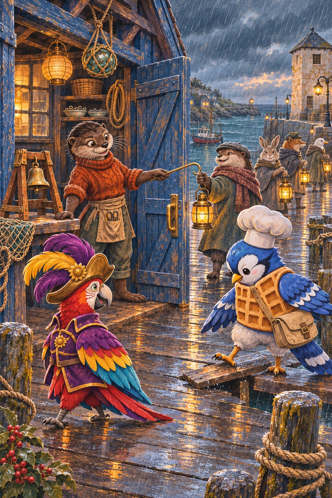
Page 43 of 44
The quiet after
By the boathouse, Ada was passing out lantern hooks. The little bell was back in the shelter of the doorway. As Polly passed, Ada put her paw on the top of the stand.
“Next year we could have both,” she said. “The tower for the procession, and this one for practice while we're learning.”
Polly asked whether she could come when they tried it again.
“Bring Belgian,” Ada said. “He knows which board on this floor makes that noise.”
Belgian looked down. He took one step to the right. The board gave a small, familiar creak.
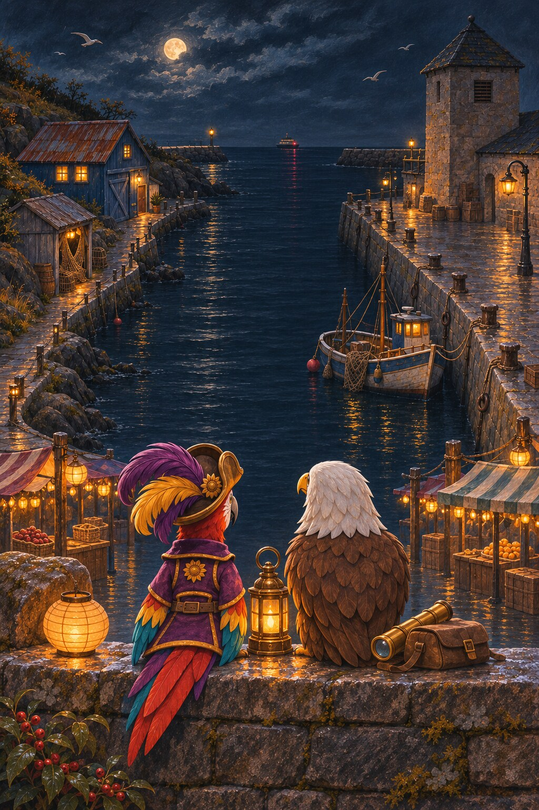
Page 44 of 44
After the procession, Polly went back to the wall with Beakon. He asked if she was going to do the bell again for him.
“In a minute,” she said.
The ferry was nearly through the harbour opening. Across the water, the answering lantern was still there. Polly could just see Belgian holding it up for the neighbour at the window. One of his wings began to dip, then steadied.
Polly set her own lantern on the wall. While the light on the other shore stayed up, she listened to everything else.
The end · Thank you for reading
Share another story
A SnackPack original story, free to read online or print.